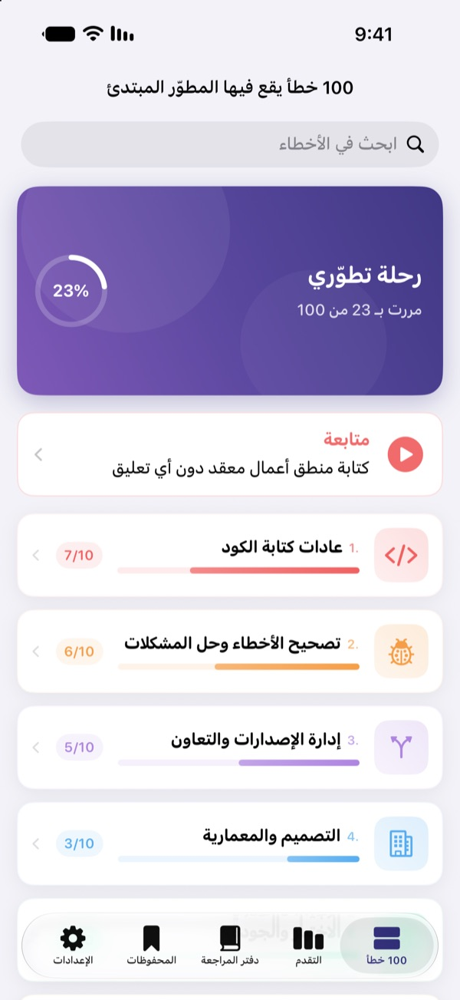
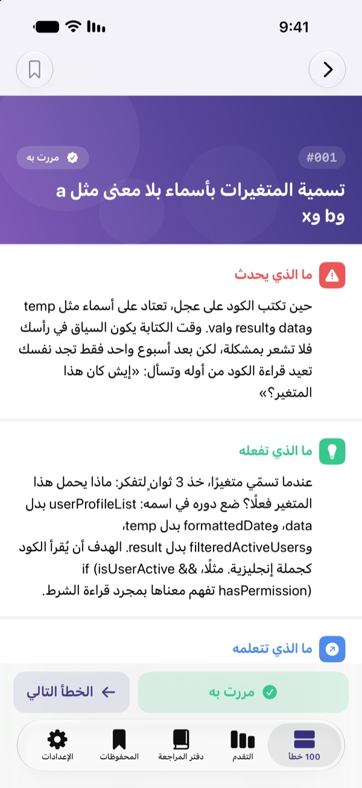
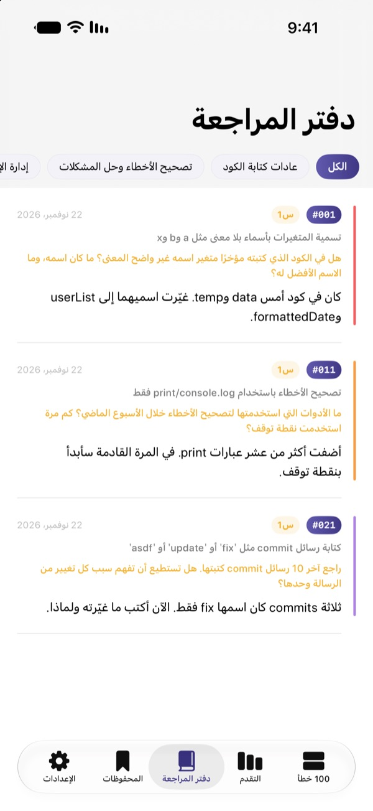
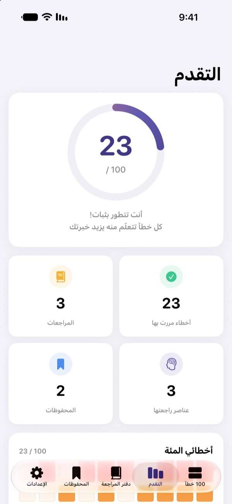

اعرف الخطأ
قبل أن يؤلمك
جمعنا أكثر 100 خطأ يقع فيها المطوّرون المبتدئون. في كل خطأ تقرأ ما الذي يحدث، وما الذي تفعله، وما الذي تتعلمه، ثم تجيب عن سؤال مراجعة حتى لا تكرره مرة ثانية.
أول 30 خطأ مجانًا. يعمل على iPhone وiPad وMac.

افتح خطأً وجرّب
هذه أخطاء الفئة الأولى المجانية العشرة، بالنص نفسه الموجود في التطبيق. ضع علامة «مررت به» على ما وقعت فيه.
هل تكررت عليك الملاحظة نفسها في مراجعة الكود؟
أسماء المتغيرات، والدوال الطويلة جدًا، والكود المنسوخ. كل مطوّر خبير مرّ بهذه الأخطاء، لكنك لا تعرفها إلا حين تصطدم بها بنفسك. يعرض لك «100 خطأ برمجي» هذه الأخطاء مسبقًا، ويجعلك تراجعها في ضوء تجربتك حتى لا تكررها.
لكل خطأ: الموقف، والحل، والدرس
افتح أي خطأ لتجده مشروحًا في ثلاثة أجزاء: ما الذي يحدث، وما الذي تفعله، وما الذي تتعلمه منه.
10 فئات من عادات كتابة الكود إلى الأمان والأداء، اخترنا فيها الأخطاء التي تتكرر فعلًا في بيئة العمل.

أسئلة مراجعة حتى لا تنتهي عند القراءة
لكل خطأ 4 أسئلة مراجعة، أي 400 سؤال في المجموع. أجب عنها وأنت تتذكر مشاريعك، فتتحول المعرفة إلى خبرة.
تُجمع إجاباتك في دفتر المراجعة حسب الفئة لتعود إليها متى شئت.

تطوّرك بنظرة واحدة
كلما وضعت علامة على خطأ مررت به، يزيد تقدّمك في كل فئة وفي المجموع. واحفظ ما تريد الرجوع إليه.
تتزامن سجلاتك عبر iCloud على iPhone وiPad وMac.

ابدأ في ثلاث خطوات
- 1
اختر فئة
فئات عادات كتابة الكود، وتصحيح الأخطاء وحل المشكلات، وإدارة الإصدارات والتعاون مفتوحة مجانًا.
- 2
اقرأ الخطأ وضع علامة
اضغط «مررت به» على الأخطاء التي وقعت فيها.
- 3
أجب عن سؤال المراجعة
تذكّر تجربتك واكتب ولو سطرًا واحدًا. تُجمع إجاباتك في دفتر المراجعة.
الفئات العشر
- عادات كتابة الكود
- #001–#010 · مجاني
- تصحيح الأخطاء وحل المشكلات
- #011–#020 · مجاني
- إدارة الإصدارات والتعاون
- #021–#030 · مجاني
- التصميم والمعمارية
- #031–#040 · PRO
- الاختبار والجودة
- #041–#050 · PRO
- التعلّم والنمو
- #051–#060 · PRO
- التواصل والتعاون
- #061–#070 · PRO
- النشر والتشغيل
- #071–#080 · PRO
- الأمان والبيانات
- #081–#090 · PRO
- الأداء والتحسين
- #091–#100 · PRO
في كل فئة 10 أخطاء، ولكل خطأ 4 أسئلة مراجعة.
30 خطأ مجانًا، والمئة كاملة مع PRO
مجاني
- أول 3 فئات، 30 خطأ
- 120 سؤال مراجعة لهذه الأخطاء
- علامات الخبرة ودفتر المراجعة والتقدم والمحفوظات
- المزامنة عبر iCloud (iPhone وiPad وMac)
100 خطأ برمجي PRO
- الفئات السبع المتبقية، 70 خطأ (#031 إلى #100)
- 280 سؤال مراجعة إضافيًا
- كل تحديثات المحتوى القادمة
اختر بين اشتراك شهري، أو سنوي (أوفر حتى 50% مقارنة بالشهري)، أو وصول مدى الحياة بدفعة واحدة.
لا نجمع أي معلومات شخصية، ولا توجد أدوات تحليل ولا إعلانات.
الأسئلة الشائعة
ما الذي أستطيع رؤيته مجانًا؟
كل أخطاء الفئات الثلاث (عادات كتابة الكود، وتصحيح الأخطاء وحل المشكلات، وإدارة الإصدارات والتعاون) وعددها 30 مع أسئلة مراجعتها. وعلامات الخبرة ودفتر المراجعة والتقدم والمحفوظات والمزامنة عبر iCloud مجانية أيضًا.
كيف أستخدم PRO على جهاز آخر؟
سجّل الدخول بحساب Apple ID نفسه، ثم اضغط «استعادة المشتريات» في شاشة الاشتراك.
كيف ألغي الاشتراك؟
من تطبيق الإعدادات ← Apple ID ← الاشتراكات يمكنك إدارته أو إلغاؤه في أي وقت. يتجدد تلقائيًا ما لم تلغِه قبل 24 ساعة على الأقل من نهاية الفترة الحالية. أما الوصول مدى الحياة فتدفعه مرة واحدة.
سجلاتي لا تتزامن بين أجهزتي.
تأكد من أن كل أجهزتك مسجّلة في iCloud بحساب Apple ID نفسه، وأن iCloud مفعّل لهذا التطبيق في الإعدادات. تحتاج المزامنة أيضًا إلى اتصال بالإنترنت.
أريد مسح كل سجلاتي.
اضغط «مسح كل البيانات» في إعدادات التطبيق لتُحذف العلامات والمراجعات والمحفوظات كلها. لا يمكن التراجع عن ذلك.
على أي الأجهزة يعمل؟
يعمل على iPhone وiPad وMac. واشتراك PRO الذي تشتريه مرة يُفتح على كل أجهزتك بحساب Apple ID نفسه.
هل تُرسل سجلاتي إلى أي مكان؟
لا. علاماتك وإجاباتك تُحفظ على جهازك وفي iCloud الخاص بك فقط. لا نجمع أي معلومات شخصية، ولا توجد أدوات تحليل ولا إعلانات.
أرسل أسئلتك واقتراحاتك إلى leeo@kakao.com.